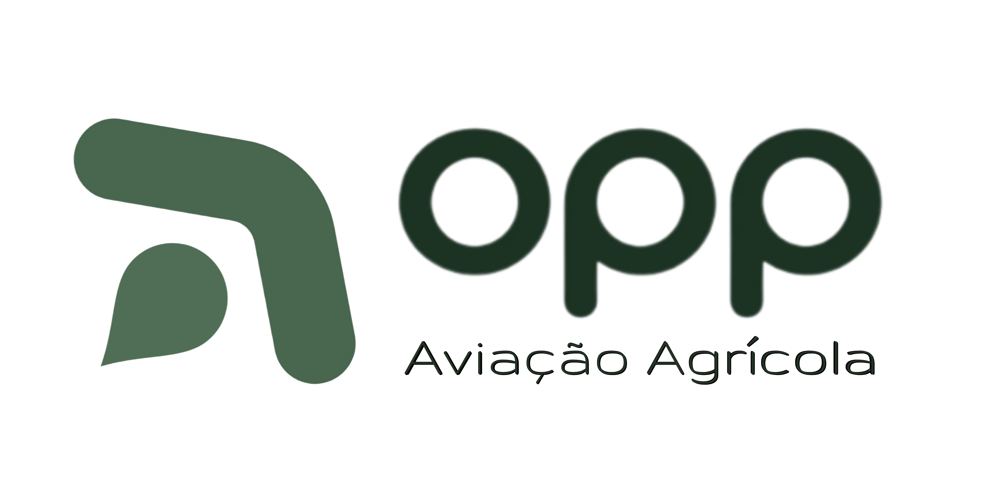

O Norte · Central de Marca
Logos das Controladas — modernização flat
Mesma receita aplicada ao Grupo Opp+: ícone mais esguio e fluido, degradê atravessando as formas, verdes da marca e descritivo em Montserrat com ortografia normal ("opp" minúsculo só por ser marca).
Opp Aviação Agrícola
Original (Canva)

Proposta modernizada
opp
Aviação Agrícola
opp
Aviação Agrícola
O que mudou
Simbolismo mantido — asas do avião acima, gota ascendente buscando o dorso da folha — com traço mais esguio · degradê esmeralda→sálvia · descritivo em Montserrat (antes fonte techy destoante).
Opp Gestão de Ativos
Original (Canva)

Proposta modernizada
opp
Gestão de Ativos
opp
Gestão de Ativos
O que mudou
Os 4 braços preservados com seu significado — três famílias fundadoras em verdes, o terceiro que integra o grupo em cinza, num plano recuado (parceiro, não sócio) — agora esguios e com degradê · núcleo (a administração) harmonizado · descritivo em Montserrat.
Aprovando as propostas, eu exporto cada logo e ícone em PNG alta resolução com fundo transparente e coloco em assets/ para uso em todas as peças. Ajustes finos (espessura, tons, ângulo do degradê) são rápidos — é só apontar.